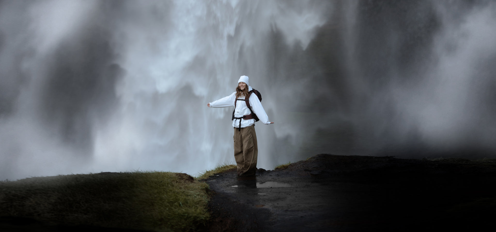
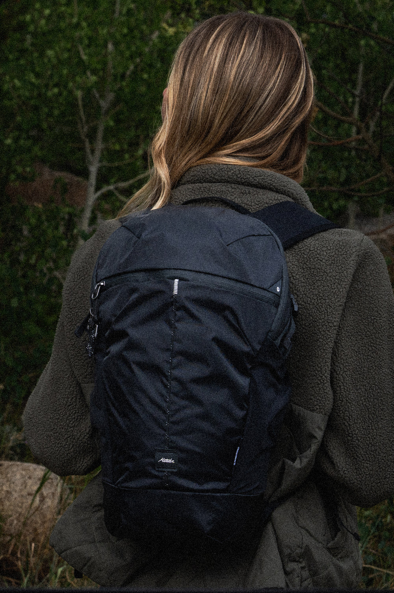
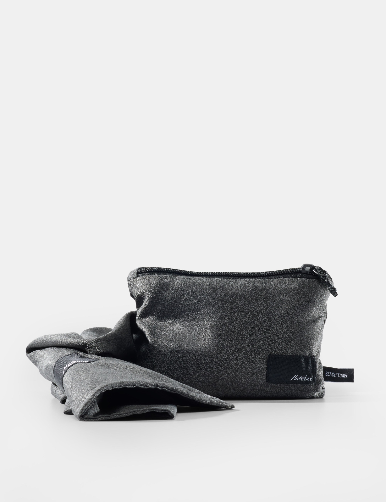
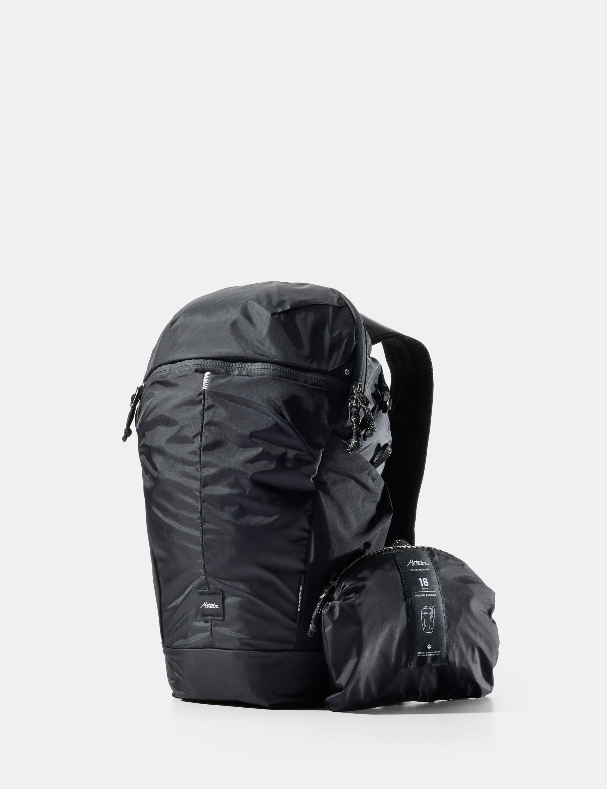
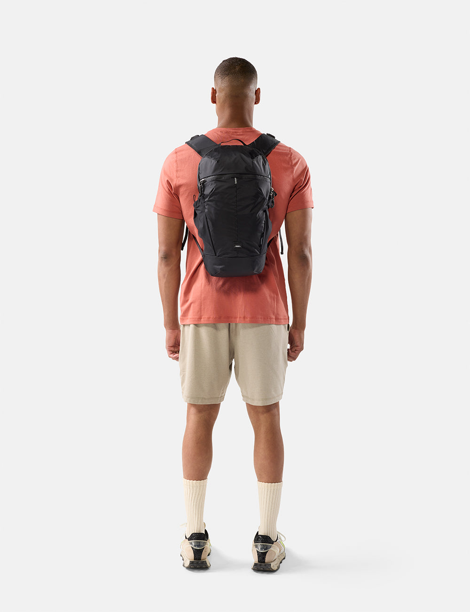
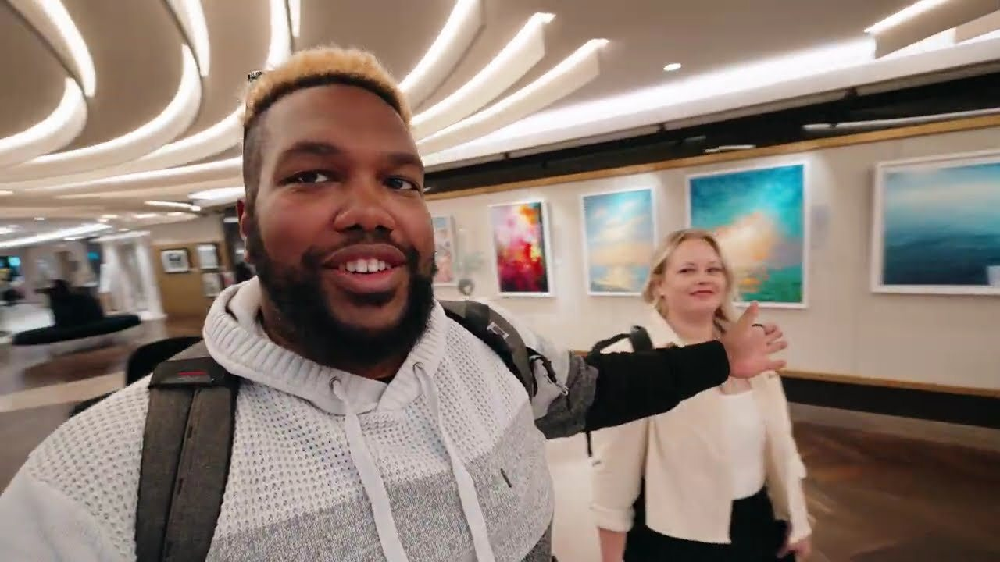

We have an idea for our cruise this winter, and it fits in one small bag.
A beach day in port always starts with the same question: what can come along without weighing the day down?
We'd pack our port-day bag with Matador and show it for real. The episodes go live in April 2027.

Before anything else goes in, the beach towel has taken the space.


The NanoDry towel and a packable daypack go in. That's the whole bag.
Out on the sand, then folded back into its pouch by the time we're back on board.

The short list we take on every port day, and why each thing earns its spot.

To pack it before we sail, we'd need a yes by mid‑December 2026.
If the idea fits, we'd love to talk. If it isn't quite right, we're happy to shape it around what works for you.